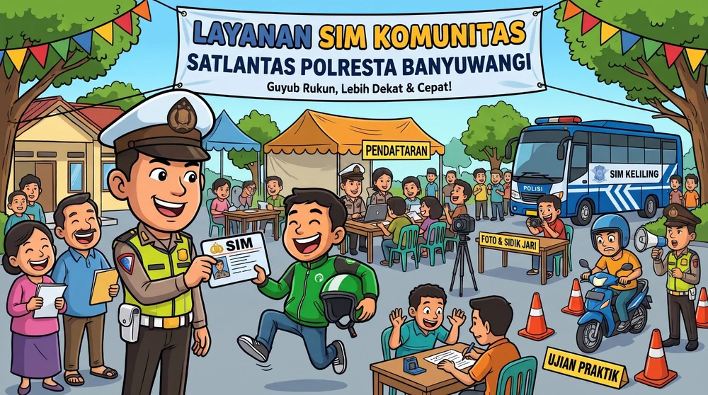

Layanan berikutnya
Memuat jadwal…
–hari
–jam
–menit
SIM Komunitas · Satlantas Polresta Banyuwangi
Petugas datang ke pesantren, kampus, sekolah, dan desa Anda. Daftar dari HP, datang di hari layanan, dan pulang dengan SIM jadi.

Memuat jadwal…
Jadwal SIM Komunitas periode ini sudah selesai. Info jadwal berikutnya lewat WhatsApp Satpas 0852-3390-0100.
Belum ada jadwal di dekat Anda? 📍 Usulkan lokasi Anda
Pengurus pondok pesantren, kampus, sekolah, desa, atau instansi bisa mengusulkan lokasi. Usulan masuk langsung ke petugas Satpas, lalu Anda dihubungi lewat WhatsApp untuk mengatur jadwal.
Lokasi dengan peserta lebih banyak dan tanggal yang longgar lebih mudah dijadwalkan. Siapkan ruang registrasi & tes, area ujian praktik, listrik, dan sinyal internet. Ketentuan peserta (PDF)
Jawab 3 pertanyaan, langsung tahu jenis pendaftaran yang tepat, berkas yang dibawa, dan biaya resminya. Data tidak dikirim ke mana pun.
Siapa yang boleh ikut, 4 persyaratan penerbitan SIM, berkas yang dibawa, ketentuan perpanjangan, ujian ulang, biaya resmi, dan dasar hukum — Perpol No. 5/2021 jo. Perpol No. 2/2023. 3 halaman A4, siap dicetak.
Sudah mengisi formulir? Lihat apakah data Anda masuk kuota, dan hasil ujian teori yang sudah dicek petugas.
10 soal acak dari bank soal Buku Digital SIM Satpas Banyuwangi (Persepsi Bahaya, Wawasan, Pengetahuan). Nilai lulus 70.
Latihan, bukan ujian resmi.
Simulasi E-AVIS 65 soal dengan hitung mundur, e-book, dan video materi ada di Buku Digital.
Warga yang berdomisili di Banyuwangi (sesuai KTP), berusia minimal 17 tahun untuk SIM C dan SIM A, dan termasuk komunitas sasaran: santri & pengurus pondok pesantren, mahasiswa & civitas kampus, siswa SMA sederajat yang cukup umur, atau masyarakat desa di lokasi layanan. Unduh ketentuan lengkap (PDF).
Pendaftaran gratis. Yang dibayar hanya PNBP resmi (PP No. 76 Tahun 2020) di loket resmi/BRIVA: SIM C baru Rp100.000, SIM A baru Rp120.000, perpanjangan SIM C Rp75.000, perpanjangan SIM A Rp80.000. Biaya tes kesehatan dan psikologi mengikuti ketentuan petugas di lokasi. Jangan membayar ke perorangan.
Tidak. SIM yang sudah lewat masa berlaku harus diajukan sebagai SIM Baru, termasuk ujian teori dan praktik. Gunakan Cek Syarat untuk memastikan.
Tetap kirim screenshot hasilnya. Petugas akan menjelaskan jadwal ujian ulang. Setelah ujian ulang, kirim lagi hasil terbaru dengan nomor WhatsApp yang sama; bukti lama otomatis diganti.
Data baru tampil sekitar 5 menit setelah formulir dikirim. Pastikan NIK dan tanggal lahir sama persis dengan yang diisi di formulir. Bila masih tidak ada, hubungi WhatsApp Satpas.
Pilih lokasi lain yang masih tersedia, atau datang langsung ke Satpas Polresta Banyuwangi pada jam pelayanan. Jadwal SIM Komunitas berikutnya diumumkan lewat halaman ini dan WhatsApp Satpas.
WhatsApp Satpas Polresta Banyuwangi · 0852-3390-0100
⚠️ Waspada calo. Petugas tidak pernah meminta transfer ke rekening pribadi. Semua informasi resmi ada di halaman ini dan Buku Digital SIM.